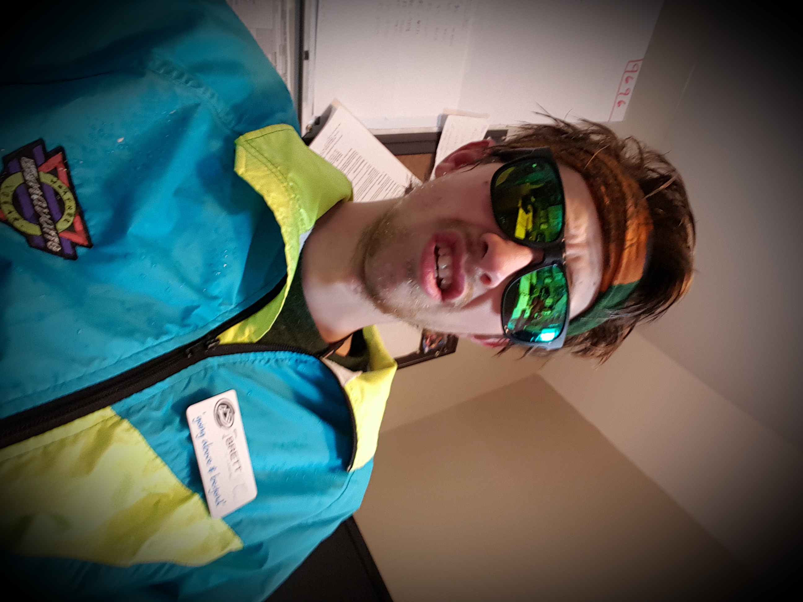
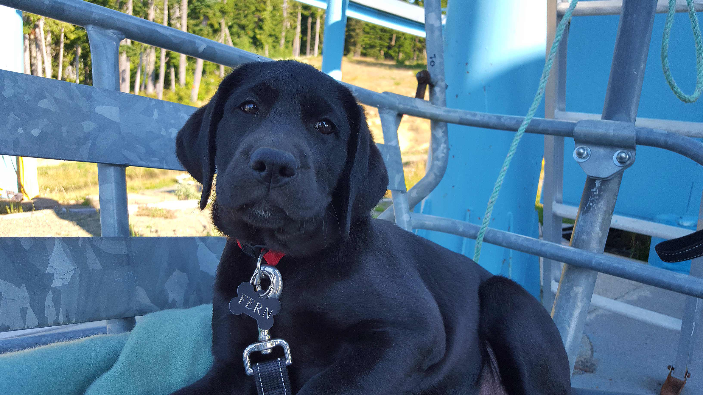

Eligant

Modest

Satisfactory

Meh
Self Loathing

This is a paragraph where Alex can explain himself. He designed this site all by himself with no help. It is a quite basic site, but maybe by the end of the semester he can make something out of it. Who knows. Anyway on to the Biography:
I was born in 1992, in the month of June. Since a young age I have been interested in anything technology related. I grew up on Vancouver Island in the small town of Courtenay. Courtenay was a town that I did not enjoy growing up in but since I have been away from there my appreciation for it has grown. When I graduated (in 2010) I had no idea what I was supposed to do with my life. So I started working, I started working at a local Ski Resort where I would run the lifts, after a year I took on a leadership role, and from there I kept moving up in the company. In 2015 I wanted a change of pace so I applied at BCIT in the CIT program. Since getting in, I have moved to Vancouver and have enjoyed myself so far. We will see where this leads me.